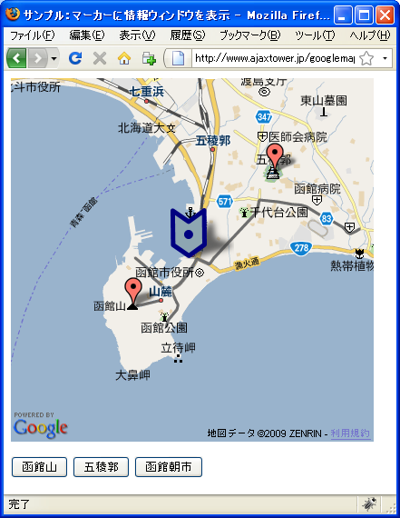
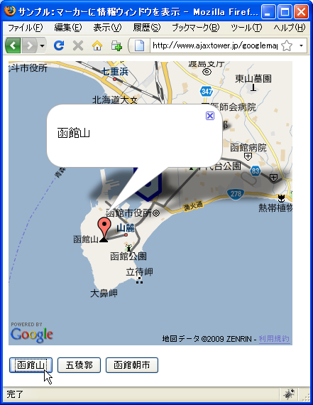
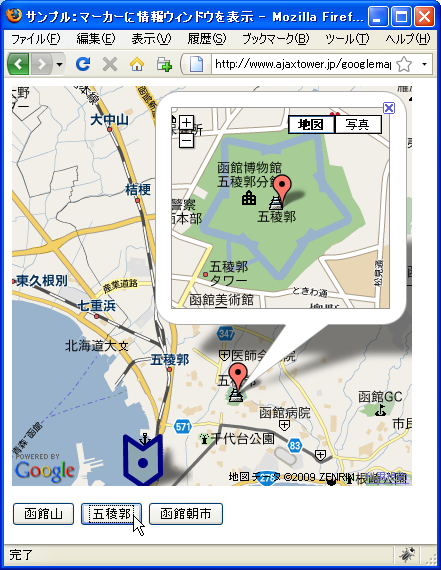
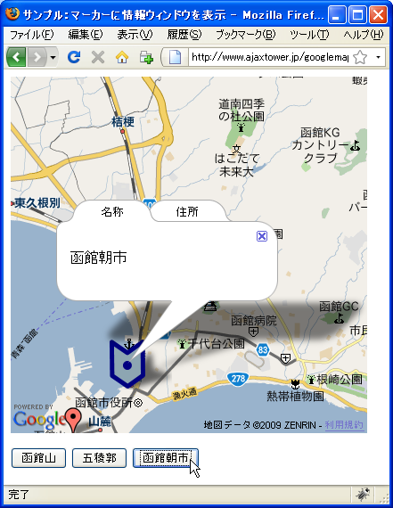

ãƒ�ーカーã�«æƒ…å ±ã‚¦ã‚£ãƒ³ãƒ‰ã‚¦ã‚’è¡¨ç¤º
æƒ…å ±ã‚¦ã‚£ãƒ³ãƒ‰ã‚¦ã�¯åœ°å›³ã�«å¯¾ã�—ã�¦è¡¨ç¤ºã�™ã‚‹ã� ã�‘ã�§ã�¯ã�ªã��ã€�ãƒ�ーカーã�«å¯¾ã�—ã�¦è¡¨ç¤ºã�™ã‚‹ã�“ã�¨ã�Œå�¯èƒ½ã�§ã�™ã€‚ãƒ�ーカーã�«å¯¾ã�—ã�¦æƒ…å ±ã‚¦ã‚£ãƒ³ãƒ‰ã‚¦ã‚’è¡¨ç¤ºã�™ã‚‹ã�«ã�¯GMarkerクラスã�§ç”¨æ„�ã�•ã‚Œã�¦ã�„ã‚‹openInfoWindowメソッドã�¾ã�Ÿã�¯openInfoWindowHtmlメソッドを使ã�„ã�¾ã�™ã€‚
ã�“れらã�®ãƒ¡ã‚½ãƒƒãƒ‰ã�«ã�¤ã�„ã�¦ã�¯GMap2クラスã�§ç”¨æ„�ã�•ã‚Œã�¦ã�„ã‚‹å�Œå��ã�®ãƒ¡ã‚½ãƒƒãƒ‰ã�¨å�Œã�˜ã�§ã�™ã€‚詳ã�—ã�„使ã�„æ–¹ã�¯ã€Œæƒ…å ±ã‚¦ã‚£ãƒ³ãƒ‰ã‚¦(GInfoWindow)ã€�ã‚’å�‚ç…§ã�—ã�¦ä¸‹ã�•ã�„。
ã�¾ã�Ÿã‚¿ãƒ–付ã��ã�®æƒ…å ±ã‚¦ã‚£ãƒ³ãƒ‰ã‚¦ã‚’è¡¨ç¤ºã�™ã‚‹openInfoWindowTabsメソッドã�¨openInfoWindowTabsHtmlメソッドã€�ã��ã�—ã�¦æƒ…å ±ã‚¦ã‚£ãƒ³ãƒ‰ã‚¦å†…ã�«è©³ç´°åœ°å›³ã‚’表示ã�™ã‚‹showMapBlowupメソッドもå�Œã�˜ã‚ˆã�†ã�«ä½¿ã�†ã�“ã�¨ã�Œã�§ã��ã�¾ã�™ã€‚
GMap2クラスã�«ã�Šã�‘ã‚‹ã�“れらã�®ãƒ¡ã‚½ãƒƒãƒ‰ã�®1番目ã�®å¼•æ•°ã�¯æƒ…å ±ã‚¦ã‚£ãƒ³ãƒ‰ã‚¦ã‚’è¡¨ç¤ºã�™ã‚‹åº§æ¨™ã‚’表ã�™GLatLngクラスã�®ã‚ªãƒ–ジェクトã�§ã�—ã�Ÿã�Œã€�GMarkerクラスã�§ç”¨æ„�ã�•ã‚Œã�¦ã�„るメソッドã�¯ãƒ�ーカーã�«æƒ…å ±ã‚¦ã‚£ãƒ³ãƒ‰ã‚¦ã‚’è¡¨ç¤ºã�™ã‚‹ã�Ÿã‚�ã€�座標ã�®æŒ‡å®šã�¯ä¸�è¦�ã�§ã�™ã€‚ã��ã�®ç‚ºã€�例ã�ˆã�°æ¬¡ã�®ã‚ˆã�†ã�«GMarkerクラスã�§ç”¨æ„�ã�•ã‚Œã�¦ã�„るメソッドã�¯åº§æ¨™ã‚’指定ã�™ã‚‹å¼•æ•°ã�¯ã�‚ã‚Šã�¾ã�›ã‚“。
openInfoWindow(content:Node, opts?:GInfoWindowOptions)
地図ã�®æƒ…å ±ã‚¦ã‚£ãƒ³ãƒ‰ã‚¦ã‚’ãƒ�ーカーã�®ã‚¢ã‚¤ã‚³ãƒ³ä¸Šã�«è¡¨ç¤ºã�—ã�¾ã�™ã€‚æƒ…å ±ã‚¦ã‚£ãƒ³ãƒ‰ã‚¦ã�® コンテンツã�¯ DOM ãƒ�ードã�¨ã�—ã�¦æŒ‡å®šã�•ã‚Œã�¾ã�™ã€‚使用å�¯èƒ½ã�ªã‚ªãƒ—ションã�¯ GInfoWindowOptions.maxWidth ã� ã�‘ã�§ã�™ã€‚
実際��次�よ��記述���。
var map = new GMap2(document.getElementById("map"));
map.setCenter(new GLatLng(35.172304,136.908306), 15);
var point = new GLatLng(35.680481,139.767036);
var marker = new GMarker(point, opts);
map.addOverlay(marker);
var html = "<p>函館山</p>";
marker.openInfoWindowHtml(html);
ã�ªã�Šãƒ�ーカーã�«è¡¨ç¤ºã�™ã‚‹æƒ…å ±ã‚¦ã‚£ãƒ³ãƒ‰ã‚¦ã�§ã�‚ã�£ã�¦ã‚‚ã€�1ã�¤ã�®åœ°å›³ä¸Šã�«ã�¯1ã�¤ã�—ã�‹è¡¨ç¤ºã�™ã‚‹ã�“ã�¨ã�Œã�§ã��ã�¾ã�›ã‚“。
アイコンを指定ã�—ã�Ÿãƒ�ーカーã�«æƒ…å ±ã‚¦ã‚£ãƒ³ãƒ‰ã‚¦ã‚’è¡¨ç¤º
アイコンを指定ã�—ã�Ÿãƒ�ーカーã�«æƒ…å ±ã‚¦ã‚£ãƒ³ãƒ‰ã‚¦ã‚’è¡¨ç¤ºã�™ã‚‹å ´å�ˆã€�アイコンを作æˆ�ã�™ã‚‹æ™‚ã�«æƒ…å ±ã‚¦ã‚£ãƒ³ãƒ‰ã‚¦ã‚’ãƒ�ーカーã�®ã�©ã�®ä½�ç½®ã�«è¡¨ç¤ºã�™ã‚‹ã�‹æŒ‡å®šã�—ã�ªã�‘ã‚Œã�°ã�„ã�‘ã�¾ã�›ã‚“。指定ã�™ã‚‹ã�«ã�¯GIconクラスã�®infoWindowAnchorプãƒãƒ‘ティã�«æŒ‡å®šã�—ã�¾ã�™ã€‚
infoWindowAnchorプãƒãƒ‘ティ
アイコン画åƒ�左上隅を基準ã�¨ã�—ã�Ÿã€�æƒ…å ±ã‚¦ã‚£ãƒ³ãƒ‰ã‚¦ã�Œã�“ã�®ã‚¢ã‚¤ã‚³ãƒ³ã�«å›ºå®šã�•ã‚Œã‚‹ å ´æ‰€ã�®ãƒ”クセル座標。 値： GPoint
æƒ…å ±ã‚¦ã‚£ãƒ³ãƒ‰ã‚¦ã�®ä½�ç½®ã�®æŒ‡å®šã�¯GPointクラスã�®ã‚ªãƒ–ジェクトã�§æŒ‡å®šã�—ã�¾ã�™ã€‚GPointクラスã�¯xプãƒãƒ‘ティã�¨yプãƒãƒ‘ティã�®2ã�¤ã�®å€¤ã‚’ä¿�æŒ�ã�™ã‚‹ã‚¯ãƒ©ã‚¹ã�§ã€�アイコン画åƒ�ã�®å·¦ä¸Šéš…ã�‹ã‚‰ã�®ä½�ç½®ã�§æŒ‡å®šã�—ã�¦ä¸‹ã�•ã�„。
GIconクラスã�®ã‚ªãƒ–ジェクトを作æˆ�ã�™ã‚‹æ™‚ã�«ã€�ä»–ã�®ãƒ—ãƒãƒ‘ティã�¸å€¤ã‚’è¨å®šã�™ã‚‹æ™‚ã�«å�ˆã‚�ã�›ã�¦infoWindowAnchorプãƒãƒ‘ティã�«ã‚‚値をè¨å®šã�—ã�¦ä¸‹ã�•ã�„。
var markerIcon = new GIcon(); markerIcon.image = "./img/marker.png"; markerIcon.shadow = "./img/shadow.png"; markerIcon.iconSize = new GSize(42, 56); markerIcon.shadowSize = new GSize(70, 56); markerIcon.iconAnchor = new GPoint(21, 56); markerIcon.infoWindowAnchor = new GPoint(21, 28);
実際��次�よ��記述���。
var map = new GMap2(document.getElementById("map"));
map.setCenter(new GLatLng(35.172304,136.908306), 15);
var point = new GLatLng(35.680481,139.767036);
var markerIcon = new GIcon();
markerIcon.image = "./img/marker.png";
markerIcon.shadow = "./img/shadow.png";
markerIcon.iconSize = new GSize(42, 56);
markerIcon.shadowSize = new GSize(70, 56);
markerIcon.iconAnchor = new GPoint(21, 56);
markerIcon.infoWindowAnchor = new GPoint(21, 28);
var opts = {icon:markerIc};
var marker = new GMarker(point, opts);
map.addOverlay(marker);
var html = "<p>函館山</p>";
marker.openInfoWindowHtml(html);
上記ã�®ã‚ˆã�†ã�«ã�™ã‚‹ã�“ã�¨ã�§è‡ªä½œã�®ã‚¢ã‚¤ã‚³ãƒ³ã‚’使ã�£ã�Ÿãƒ�ーカーã�«ã‚‚æƒ…å ±ã‚¦ã‚£ãƒ³ãƒ‰ã‚¦ã‚’è¡¨ç¤ºã�™ã‚‹ã�“ã�¨ã�Œã�§ã��ã�¾ã�™ã€‚
サンプルプãƒã‚°ãƒ©ãƒ
��試�����。
var marker1;
var marker2;
var marker3;
function initialize() {
if (GBrowserIsCompatible()) {
var map = new GMap2(document.getElementById("map_canvas"));
map.setCenter(new GLatLng(41.7724,140.72628), 12);
var markerIcon = new GIcon();
markerIcon.image = "./img/icon.png";
markerIcon.shadow = "./img/shadow.png";
markerIcon.iconSize = new GSize(42, 56);
markerIcon.shadowSize = new GSize(70, 56);
markerIcon.iconAnchor = new GPoint(21, 56);
markerIcon.infoWindowAnchor = new GPoint(21, 28);
var opts = {icon:markerIcon};
marker1 = new GMarker(new GLatLng(41.75886,140.703535));
marker2 = new GMarker(new GLatLng(41.79672,140.757179));
marker3 = new GMarker(new GLatLng(41.772644,140.725315), opts);
map.addOverlay(marker1);
map.addOverlay(marker2);
map.addOverlay(marker3);
}
}
function openHakodateyama() {
html = "<p>函館山</p>";
marker1.openInfoWindowHtml(html);
}
function openGoryokaku() {
html = "<p>五稜éƒ</p>";
marker2.showMapBlowup(html);
}
function openAsaichi() {
var tabarray = [
new GInfoWindowTab("�称", "<p>函館�市</p>"),
new GInfoWindowTab("�所", "<p>函館市若�町9-19</p>")
];
marker3.openInfoWindowTabsHtml(tabarray);
}
<!DOCTYPE html "-//W3C//DTD XHTML 1.0 Strict//EN"
"http://www.w3.org/TR/xhtml1/DTD/xhtml1-strict.dtd">
<html xmlns="http://www.w3.org/1999/xhtml">
<head>
<meta http-equiv="content-type" content="text/html; charset=UTF-8"/>
<title>サンプル：ãƒ�ーカーã�«æƒ…å ±ã‚¦ã‚£ãƒ³ãƒ‰ã‚¦ã‚’è¡¨ç¤º</title>
<script src="http://maps.google.com/maps?file=api&v=2&key=(key)&sensor=false"
type="text/javascript" charset="utf-8"></script>
<script src="./js/code3_1.js" type="text/javascript"></script>
</head>
<body onload="initialize()" onunload="GUnload()">
<div id="map_canvas" style="width: 400px; height: 400px"></div>
<form>
<p>
<input type="button" id="btn1" value="函館山" onclick="openHakodateyama()" />
<input type="button" id="btn2" value="五稜éƒ" onclick="openGoryokaku()" />
<input type="button" id="btn3" value="函館�市" onclick="openAsaichi()" />
</p>
</form>
</body>
</html>
��ブラウザ�上記�URLを見����。

地図下ã�«è¨ç½®ã�—ã�Ÿã€Œå‡½é¤¨å±±ã€�「五稜éƒã€�「函館æœ�市ã€�ã�®ãƒœã‚¿ãƒ³ã‚’押ã�™ã�¨ã€�å�„地点æ¯�ã�«è¨å®šã�—ã�Ÿæ§˜ã€…ã�ªæƒ…å ±ã‚¦ã‚£ãƒ³ãƒ‰ã‚¦ã‚’ãƒ�ーカーã�«è¡¨ç¤ºã�—ã�¾ã�™ã€‚



( Written by Tatsuo Ikura )

著者 / TATSUO IKURA
åˆ�心者ï½�ä¸ç´šè€…ã�®æ–¹ã‚’対象ã�¨ã�—ã�Ÿãƒ—ãƒã‚°ãƒ©ãƒŸãƒ³ã‚°æ–¹æ³•ã‚„開発環境ã�®æ§‹ç¯‰ã�®è§£èª¬ã‚’è¡Œã�†ã‚µã‚¤ãƒˆã�®é�‹å–¶ã‚’è¡Œã�£ã�¦ã�„ã�¾ã�™ã€‚